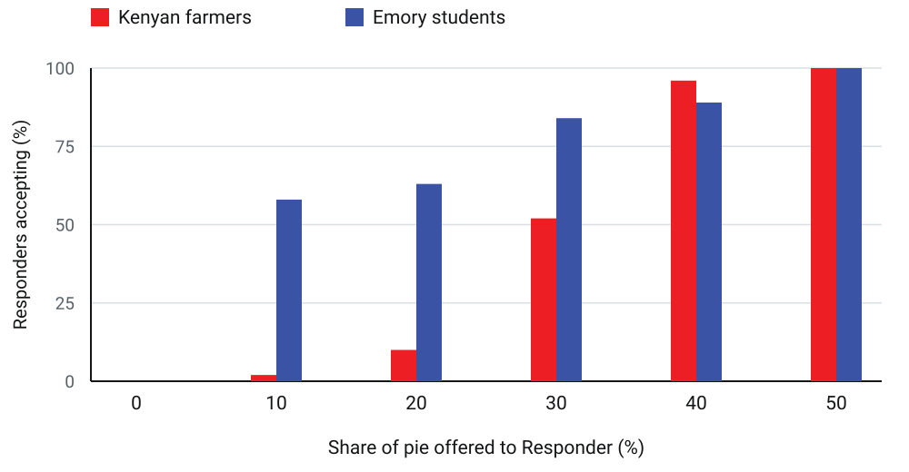
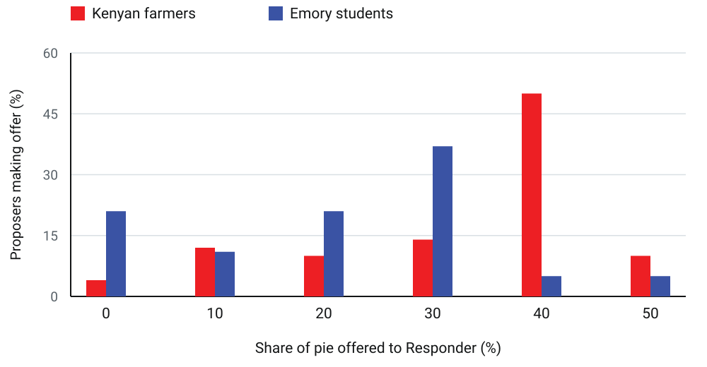
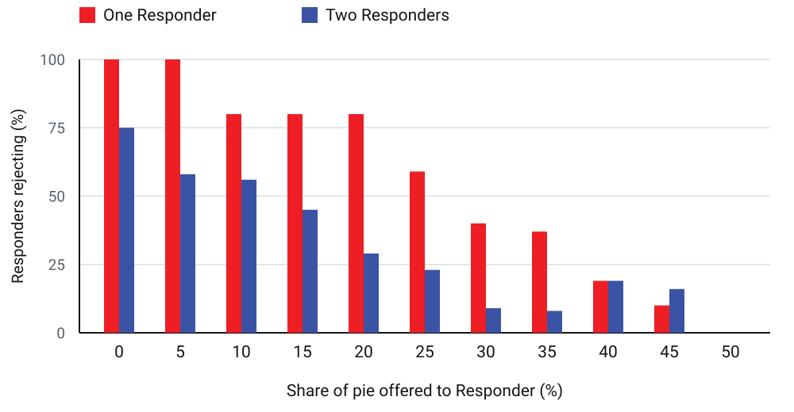

#5
November 2026
You will be randomly paired with another participant. Neither of you will know the other’s identity at any point during the experiment. There will be a single decision round.
Roles: Proposer () and Responder ().
At the beginning of the experiment, the Proposer () will receive an initial endowment of €10.
The Proposer () makes an offer to the Responder () and keeps the rest. The offer can be any amount from €0 to €10.
The Responder () can accept or reject the offer.
If the Responder () accepts, then the €10 is split as proposed.
If the Responder () rejects, neither player receives anything.
Take the experiment seriously. One pair of students ( ) will be selected at random and paid according to their decisions.
Do not communicate with others.
Proposer (): What split did you propose? Why?
Responder (): What split were you offered? Did you accept? Why?
The experiment you just took part in is called the ultimatum game (Güth, Schmittberger, and Schwarze 1982).
The game is sequential: the Proposer’s payoff depends on the Responder’s decision, so the Proposer must anticipate how the Responder might react to the offer.
Read the paper HERE
If the Responder cared only about their own payoff, they would accept any positive offer: even a small amount is better than nothing.
If the Proposer expected this, they would offer the smallest possible amount, perhaps just one cent.
Is that what we see in experiments? No.
A Responder who finds an offer unfair or insulting may give up their own payoff to punish the Proposer.
Why might the Proposer make a generous offer?
A Responder’s minimum acceptable offer is the smallest share they would take rather than reject.
As we said, a purely self-interested Responder would accept any positive amount.
Fairness, reciprocity, and social norms can raise that threshold. The Proposer must guess where the threshold lies.
Suppose the pie is 100 and an equal split is the social norm. Thus, offers of 50 or more are accepted.
Let \(y\) be the offer to the Responder. For \(y < 50\), the Responder gets \(y\) by accepting the offer. By rejecting it, the Responder gets no money but may gain satisfaction from punishing the Proposer for violating the equal-split norm: \[ U_{\text{accept}}(y)=y, \qquad U_{\text{reject}}(y)=R(50-y), \qquad R\geq 0. \]
\(R\) measures the strength of the Responder’s reciprocity motive.
\[ R(50-y) > y. \]
\[ y(1+R)<50R \qquad\Rightarrow\qquad y<\frac{50R}{1+R}. \]
| Reciprocity \(R\) | Minimum acceptable offer \(y^*\) | Implication |
|---|---|---|
| 0 | 0 | Any positive offer is accepted. |
| 1 | 25 | Offers below 25 are rejected. |
| 4 | 40 | Offers below 40 are rejected. |
As \(R\) increases, the threshold moves toward the fifty-fifty social norm.
These are model predictions; let’s now see how people behave in ultimatum game experiments.
Henrich et al. (2006) ran one-shot, anonymous ultimatum games for real money across diverse populations.
The next graph compares Kenyan farmers with students at Emory University in the US.
Proposers could offer 0, 10, 20, 30, 40, or 50% of the pie to Responders.
Read the paper HERE

No Responder in either sample accepted an offer of zero.
At 10% of the pie, only 2% of Kenyan farmers accepted, compared with 58% of Emory students.
Rejecting a positive offer costs the Responder money. Social norms and perceptions of fairness can help explain why some people do it.

Each bar shows the share of Proposers who made that offer. The respective dark portions use Responder decisions to show the proportion of these offers which was rejected.
For example, 50% of Kenyan farmer Proposers offered 40% of the pie, and 4% of Kenyan Responders rejected a 40% offer.
Proposers could use their knowledge of local preferences and norms to estimate each offer’s chance of rejection. Accurate expectations would resemble the observed rejection proportions.
Proposer’s expected payoff = probability of acceptance \(\times\) Proposer’s share if accepted.
The estimated acceptance probabilities use the Kenyan Responders’ decisions as a benchmark for what a well-informed Proposer might expect.
| Offer to Responder | Acceptance probability | Proposer’s share if accepted | Expected payoff |
|---|---|---|---|
| 50% | 100% | 50% | 50% |
| 40% | 96% | 60% | 57.6% ≈ 58% |
| 30% | 52% | 70% | 36.4% ≈ 36% |
Kenyan farmer Proposers made larger offers: about 60% offered at least 40% of the pie, compared with about 11% of Emory Proposers.
If Proposers anticipated their group’s observed Responder acceptance rates, the offer with the highest expected payoff would have been 40% in Kenya and 30% at Emory. Both were also the most common offers.
This result is consistent with monetary self-interest. The data do not show whether fairness or reciprocity also played a role in motivating Proposers.
Fischbacher, Fong, and Fehr (2009) study a version of the ultimatum game in which the Proposer offers the same split to two Responders.
If only one Responder accepts, then that Responder and the Proposer receive the proposed shares. If both Responders accept, then one is selected at random.
If neither Responder accepts, then all three players receive nothing.
Would you be more or less willing to reject a low offer?
Read the paper HERE

With one Responder, rejecting a low offer also leaves the Proposer with nothing.
With two, the other Responder may accept. Rejecting may no longer punish the Proposer.
In the experiment, the average accepted offer fell from 43% with one Responder to 26% with two.
Changing the rules of a game can change its outcome, even if people’s preferences remain the same.
Cappelen et al. (2014) studied how people judge fairness and equality.
Key findings:
Read the paper HERE